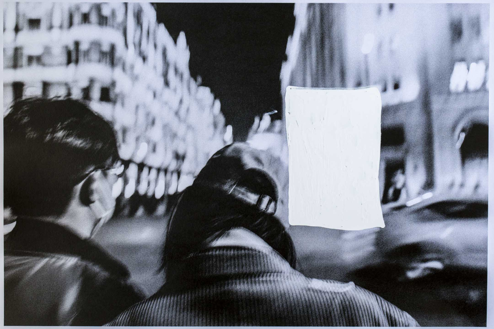
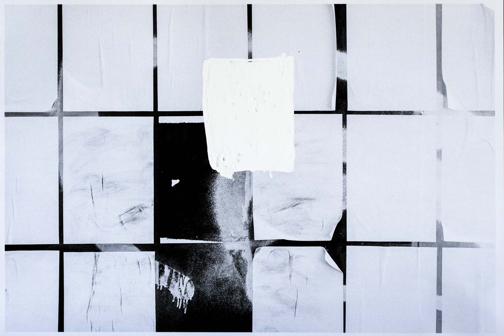

被困在白紙的人
Table of Contents
封控解除了，但針對白紙親歷者的封控才剛剛開始。

特約撰稿人 尤家明、興波、路粼 發自新加坡
刊登於 2023-11-26
白紙運動的能量是否被延續？轉移到了哪裏？這是端傳媒「白紙週年」專題關注的核心問題。我們推出系列報導，關注行動者在被恐懼裹挾中如何艱難前行；關注白紙能量轉移到海外後的具體困境；關注運動留給中國大陸行動者的巨大創傷；以及，海內外的白紙親歷者們想說給你們聽的話。
起床是一件艱難的事。
回到家鄉後，艾歌每天在床上躺十幾個小時，「醒來吃飯就已經耗費了所有力氣」。
起床，意味著面對新的一天，面對不能理解自己為何參與白紙的父母，以及他們假裝出來的「一切正常」-–—好像艾歌在北京街頭被捕、回到家鄉，不過是過年回家吃個飯而已。
身處成都的李青不再去曾經熱衷的書店討論、觀影等公共活動。魷魚也在2月離開成都，到處遊山玩水，她很少上網看新聞，只想接觸具體的人。「我想知道他們為什麼這麼幸福，什麼也不知道真的會幸福嗎？」
羊艮離開了獲釋後被孤立的兼職單位，這一年，她喜歡一個人到深夜的黃浦江邊走動，走很久很久。解封後每個人都在流動，她卻感到凝滯和迷茫。
白紙運動帶來了什麼？又帶走了什麼？留在牆內的人，陷入了巨大的失語。
第一次
他們還記得一年前。
11月27日，在上海抗議現場的羊艮一邊被警察驅趕，一邊不斷拉回被警察抓住的人，在一次試圖救下被警察抬起四肢的女孩時，她不慎被抓。
警察打羊艮的頭、踹她的後背，將她和女孩一同推上小巴。在小巴上，她們被扇耳光、搶手機。「警察搶手機的同時又讓我們閉嘴，甚至不可以哭。」羊艮記得，身旁的女生因為害怕一直在哭，警察就扇她耳光、扯她頭髮，讓她不要哭。
「那輛車上好像是完全的黑暗，無法求助任何人。」羊艮說。她在派出所經歷了威脅式審訊、睡眠剝奪、寫悔過書等，直至29日才離開。事後，羊艮在醫院診斷出輕微腦震盪。
同一晚，在成都望平街，23歲的魷魚騎車經過路邊停靠的幾十輛警車，聽到兩個身穿夾克、40多歲的便衣，在用一種很戲謔的口吻交流彼此打了多少人。
「感覺白紙當天像是沈浸式戲劇，有戲在上演，但不覺得這是真實的，」魷魚說，「就像你一直知道警察有暴行，但你沒有親眼見過。」
她記得遊行隊伍中有很多牽著寵物的年輕人，一個牽著狗的男生一直走在遊行隊伍的前面，他被警察暴力拖走時，狗在一旁不停地叫。
離開那個現場後，魷魚才發現自己的手一直在抖。
在見證暴力前，李青遇到過一些溫暖的片刻。也是在成都白紙現場，有人演講、有人為烏魯木齊大火的死難者擺放蠟燭和鮮花。一些基督徒也在場，他們是秋雨教會的人，圍成一個圈為眾人祈禱。「好像在比較危難的時候，人類還是可以散發互相守護的光輝。」
在北京亮馬河，柏莉看到人群中一個爸爸抱著4、5歲的小孩，孩子問，他們在排隊做核酸嗎？爸爸說，不是，他們都是不想做核酸的人。
那晚，柏莉的朋友一直待到凌晨兩三點。朋友說，那是她第一次站在街上。
他們每個人都為站在街上付出了沈重代價。
封控解除了，但針對白紙親歷者的封控才剛剛開始
獲釋的朋友們在聊天群組裏打趣被關押的經歷，聊看守所的廁所長什麼樣、有什麼好笑的書、警察講了什麼話。艾歌沈默著，「我很難想象他們在看守所裏經歷了什麼」，但每個人都表現出不需要被安撫的樣子。
要如何討論白紙？用什麼樣的態度討論？討論的意義又是什麼？
艾歌說，真正經歷白紙的人，你沒有辦法和他去討論。魷魚也說，不知道要討論什麼。
沒有被捕的人、被捕後獲釋的人，都背負著「倖存者」的愧疚。「知道有人比自己更慘、比自己承受更多，所以我們不應該去埋怨這一切。」艾歌說，「我說得太多，就好像給別人展示傷口，很羞恥。」
艾歌20多歲，在北京工作，因幫助參與白紙被捕的朋友尋找法律支援，在街頭被抓走，遭連夜審訊後獲釋。艾歌回到家鄉，母親辭掉工作在家陪她，父親在體制內的工作也因她的事受到影響。
Figure 1: 2023年夏末立秋前的黃浦江邊。攝影：羊艮
獲釋者們深知不能在微信裏聯繫以前的任何一個朋友；被警察沒收又歸還的手機、電腦似乎隨時在蒐集新的「罪證」；人們輾轉得知其他人的近況，知道他被釋放-–—這樣就夠了，不必再說什麼。很多人就此斷聯。
白紙讓他們看到彼此，但隨之而來的抓捕、審問、關押，又讓每個人回到隔絕狀態。封控解除了，但針對親歷者的封控才剛剛開始。
「白紙那幾天我什麼事情都幹不了，不敢相信這一切是真的，但結束的方式反而讓我覺得這一切是真的。」艾歌說。
羊艮曾幻想白紙會是「不錯的、勇敢的開頭」，但後來發現，不僅看不到第二次、第三次，甚至這個開頭的代價都無比高昂。在白紙剛剛過去的三、四個月裏，遭遇過警察毆打的羊艮，在路邊或地鐵看到警察就會犯怵，每每警車經過就一陣緊張，但表面又要佯裝沒事。
去派出所拿自己被沒收查驗的手機那日，羊艮遇到了另一位也去拿手機的男生，站在他身旁的女領導向派出所詢問事件定性，以此來決定還在試用期的男生是否能被錄用。
二次創傷潛藏在白紙後的日常生活裏。解封後的感染高峰期，成都的出租車司機向魷魚的朋友埋怨道：「就因為你們年輕人鬧，大家才陽了。」羊艮在微博中提及因聲援白紙被軟封殺的演員春夏時，有人評論到：「確實不要忘記，是那些學生讓放開才害大家感染。」
魷魚有次和朋友喝酒。朋友說：「我簡直不能理解怎麼有人做出白紙這樣不顧後果的事，你去街上能推翻什麼，自以為很反叛！」那是魷魚唯一一次和別人聊白紙，她哭了很久。
這樣的時刻，他們也會問自己，意義是什麼？
「政府給我一種不了了之的感覺，不允許大家討論封控的各種話題，好像那些（逝者）名字不存在，好像事情沒有發生過。」羊艮感到困惑，「因為放開了，大家好像就也沒有一個新的理由再去聚集到一起，發出訴求。」
艾歌有同樣感受。封控結束後，一些朋友們似乎回到了正常生活，該吃吃、該喝喝，拍漂亮照片發在朋友圈。「原來你們生活中糟糕的事情只是因為封控而已 嗎？」她安慰自己，可能他們也沒有真正走出來，只是表面上開心，「但我連表面上開心都做不到，我的生活斷裂了，但別人的生活在繼續。」艾歌說。
「我有種被拋下的感覺。」

變與不變
氣氛比從前更冷了。
端傳媒了解到，各地白紙被捕者近日陸續接到當地社區或警方的電話，禁止他們在週年時期有所活動。白紙週年前夕，上海烏魯木齊中路附近的警力在夜間巡邏也變得頻密。
過去這一年，上海市中心和地鐵站增加了更多警車和警察， 頻繁到羊艮漸漸習以為常。很多朋友離開上海、甚至離開中國，書店「關閉的關閉，結業的結業」。羊艮覺得，疫情放開後人流動了起來，但一些東西又好像停滯了，「在這個環境裏，找不到一個新的突破口去努力。」
她還在繼續表達，在社交媒體轉發社會新聞，卻三番五次接到警察電話，「讓我刪帖，找我談話，或者是威脅我」，羊艮說，拼命查違禁詞、一遍遍改成縮寫，還是發不出去，是很挫敗的感受。
如今，她看到公共事件想說些什麼，卻不知可以發在哪裏、哪裏是安全的，話語在腦子裏過了一遍，卻再也沒有力氣寫下來。
同樣受困於網絡審查的還有身在廣州的寶榮，她因轉發白紙相關內容失去微信帳號，在自己的公眾號上寫作，發一篇被刪一篇。寶榮說，一位內容創作者曾想 發起活動到香港散步，為此三番五次改公眾號標題，從最初的「和《香港散步學》的作者一起city walk」，一直改成「和那個那個的作者一起city walk」才成功發出。
白紙後，柏莉看到警察或社區工作人員會有生理性反胃。她今年29歲，在北京做了數年記者，疫情期間，柏莉用了十幾年的微博帳號被炸號，她關注的女權、法律博主亦接二連三消失。
在李青看來，白紙似乎沒有對成都的公共生活增加額外的壓力。
「不管在白紙運動前還是後，成都整體有一種微妙的張力。」李青20出頭，參加了去年在成都的白紙運動。他解釋道，近幾年來成都吸引了很多離開北上廣 的公民行動者，他們給公共生活帶來新的可能性。隨著這種可能性可見度的增加，活動也被有關部門關注，審查壓力越來越大。另一方面，公共生活的蓬勃，也有房 地產、藝術館等商業機構或政府背景的活動，甚至在實體書店不斷關門歇業的時候，成都還在不斷開新的書店。
「看著頻率和密度增加了，但性質有區別。」李青說。
2023年10月底，萬聖節「百鬼夜行」的場面讓上海再次成為媒體關注的焦點。襯衫上貼滿白紙的女生，手持巨型棉棒的「大白」，拿著「學醫救不了中國人」標語的「魯迅」，掛著「打倒程蝶衣」牌子的「程蝶衣」。年輕人用變裝表達諷刺和憤怒，一些評論說：「徬彿看到一年前」。
羊艮卻覺得難過：「大家的表達普遍是陰陽怪氣，這種表達背後是一種創傷。 你沒有辦法自由地正常地講述，只能用隱晦的、譏諷的。」
29日的現場，羊艮遇到警察開始交通管制、疏散人群-–—如一年前一樣，對路人說著「只出不進」。被封路圍起來的空間，有個名為「FOUND 158」的酒吧，酒吧每年的萬聖節活動都會吸引人群。當羊艮穿過管制走進去，卻發現酒吧燈條上滾動著：「158無萬聖節活動」。
「這怎麼樣都算不上是一個正常的環境。」羊艮說。
Figure 2: 11月初，寶榮在香港中環。圖：受訪者提供
離開
不少白紙親歷者都提到「離開」這個選項。
「我不想離開，但我沒有辦法不離開、還不在心理上被摧毀掉。」艾歌說。
留學不一定是最好的選擇，卻是當下能夠自救的唯一途徑。眾多受訪的親歷者都展示出灰心、迷茫和無力感，甚至無法用言語來表達創傷。他們想要優先關注 自己，想要去一個言論自由的國家，想要留在海外。魷魚說，同溫層的朋友們以前討論留學，看重的是排名、好專業，如今看重哪個項目更容易留在國外。
柏莉在白紙後離開北京，赴海外快速「轉碼」。她所在的城市政治氛圍稀薄，柏莉日常忙碌於學業，像一條「老狗」一般放鬆生活。她提起一位曾經非常赤誠、熱血的行動者，前幾年他搬到美國，過上安穩的生活，結婚生子，轉學生物和醫學。
「我現在能理解了，因為（過去的）感情太強烈了。」柏莉說。
遠離政治和新聞，也成為魷魚和李青的選擇。「一些幼稚的責任感都被消磨掉了，也不太想回憶那段時間。現在自我審查尺度又收緊了一些。」李青說。艾歌也說，自己現在關心政治，缺少了曾經的熱情，只是出於責任感：「我已經做了一些事情，那就要繼續做下去」。
來到海外後，艾歌嘗試和身邊的外國朋友討論白紙，對方聽完會說：「I'm really sorry for that」。艾歌不知要怎麼回應。她覺得出國以後遇到的人，無論是外國人還是中國人，講這件事都很隔閡。她也關注白紙運動在海外的發展，「海外延續很重 要，但另一方面很諷刺，這是關於中國的運動，你卻不能在中國談論它，它也不會對中國有影響力。」
正在申請留學的魷魚也出現了類似的灰心：「國際上的發聲傳不到牆內，就算傳到牆內，又能給誰聽到、誰願意聽到呢？」
尾聲
柏莉印象很深，那晚去亮馬橋，她只對室友說去見些朋友，不想給室友惹來麻煩。那夜柏莉做了被捕準備，裹上厚毛衣、穿上最厚的鞋-–—這樣或許在派出所 也能睡一覺。事後，在社區網格員的帶領下，警察來到家中，在室友面前將柏莉帶走。錯愕之後，室友很快著手幫助柏莉處理後續事宜、聯絡朋友。室友還去了解傳 喚時間，若柏莉沒出來，室友打算做好早餐去派出所等她。
「白紙是漩渦中很小的水流，但那天晚上做出選擇的人在我心裏很重。」柏莉說。她記得一位學政治的朋友說，六四留下的東西不是撼動了政治體制，而是隱密的社群資源和價值觀相近的人。「（白紙）就是一個考驗，有些關係和價值經受住考驗了。」
只不過，生活在中國大陸的親歷者們，面臨嚴苛的審查和監視，無法建立社群、亦很難抱團取暖。白紙運動在牆內的「不可言說」，也剝奪了反思、療傷的可能性。
「離開這裡，便能獲得自由與平和嗎？」羊艮沒有答案。
身在海外的艾歌說，無論讀書還是結識新朋友，她都快樂不起來。
「我的精神狀態、身心狀態都不是一個可以重建生活的狀態，斷裂已經發生了，沒辦法修復。」艾歌提到寫韓國學運的小說《鯖魚》，後記講到，那些看上去被毀掉人生的人，其實永遠停在了年輕的時候。
不久前，艾歌路過一場聲援巴勒斯坦的遊行，聽到人群大喊口號、看到警車的車燈晃過眼前時，她渾身顫抖。
「我想回去（中國），但我不知道我還能不能回去。」艾歌說。
為什麼想回去？
電話那頭傳來了啜泣聲。
應受訪者要求，艾歌、魷魚、羊艮、柏莉、寶榮、李青為化名。
本刊載內容版權為端傳媒或相關單位所有，未經端傳媒編輯部授權，請勿轉載或複製，否則即為侵權。